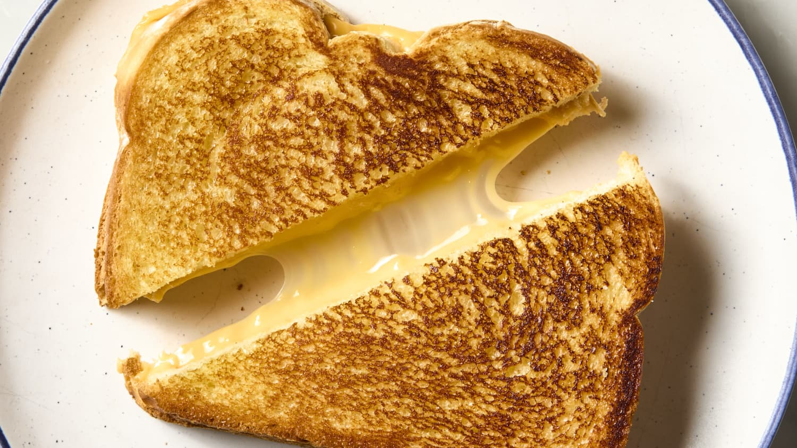

Grilled Cheese Sandwich

Description
A simple comfort meal that can be easily be made and fast too. It only consists of bread, cheese and butter.
Ingredients
- Bread
- Cheese (Cheddar and Mozzarella woukd do)
- Butter
Steps
- Place the ground beef in a skillet with olive oil.
- Top with cheese, then place another slice of bread on top (butter-side up).
- Cook until the bottom slice is lightly browned, then flip.
- Continue cooking until the cheese is melted.